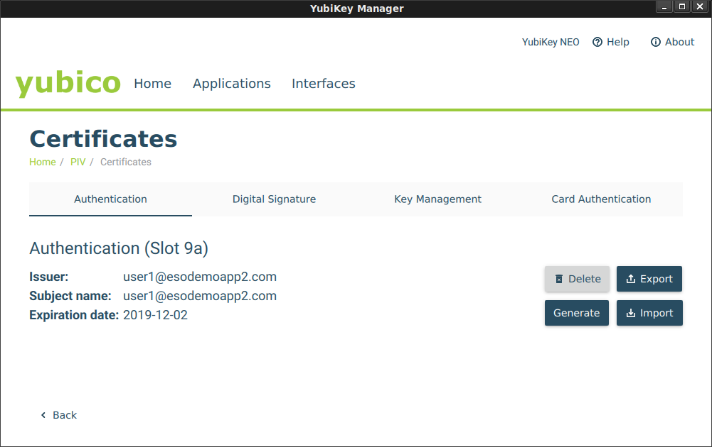

ARTICLES
Google Cloud SSH with OS-Login with YubiKey OpenSC-PKCS11 and Trusted Platform Module (TPM) based keys
or “How to embed SSH private keys into a Yubikey or TPM”.
First off, this is nothing new; its a rehash of decade old tech that i decided to try out since i happens to have a YubiKey Neo and familiarity with Trusted Platform Module on a GCP Shielded VM.
Both the Yubikey Neo and TPM have one common capability here which this tutorial covers: embedding an RSA private key inextricably into a hardware device and provide an interface to sign arbitrary data using that key. By inextricably i mean once its on the device, it can be configured to never leave in its raw form and can only be made to do specific crypto operations (sign, decrypt, etc).
The application to public-key based SSH is straightforward: instead of SSH using the private keys normally saved under ~/.ssh/, the keys are saved on the device itself. For the yubikey, you need to insert the token while for the TPM you need to execute the command only on that specific VM that was configured.
For Google Compute Engine, OS-Login allows administrators to define external RSA keys for access to specific VMs as declared through IAM policies. This tutorial embeds RSA keys for use with GCP OS Login but ofcourse this procedure is applicable to any SSH system utilizing RSA keypairs.
This Repo is NOT supported by Google Cloud. caveat emptor
Refrences
- Using PIV for SSH through PKCS11
- TPM2-PKCS11 SSH Configuration
- OS-Login: adding Adding SSH keys to a user account
- TPM2-TSS-Engine hello world and Google Cloud Authentication
- Google Cloud Yubikey TokenSource
- Google Cloud TPM TokenSource
Yubikey
To embed certificates, you first neeed a PIV-enabled Yubikey such as a Yubikey Neo. These advanced (and more expensive) Yubikeys allows you to (among other things) save keys into the device and execute crypto operations against it.
You can use either YubiKey Neo or YubiKey 4 or 5 as those keys support embedded keys.
note, Google Titan keys do not allow saving arbitrary data into it; its just U2F.
Install Yubikey Admin Tools
On any, first install Yubikey tools to help embed the RSA key. This step can be done on any system: all we are doing here is provisioning the RSA key into the Yubikey
Plug in the Yubikey and verify you’ve got a YubiKey Neo:
Check Yubikey is plugged in
$ lsusb | grep -i yubikey
Bus 001 Device 013: ID 1050:0111 Yubico.com Yubikey NEO(-N) OTP+CCID
Install OpenSC
Install PKCS11 OpenSC support
sudo apt-get install opensc opensc-pkcs11
Confirm the OpenSC PKCS Library is installed. eg:
/usr/lib/x86_64-linux-gnu/opensc-pkcs11.so
You will need to install OpenSC on any system you wish to use the Yubikey. You do not ofcourse need ot install the yubico toolsets anywhere else other than the system where you embed the key.
Generate or Import RSA Key
You can either generate an RSA keypair directly on the Yubikey or import one externally. In the following, we will generate a keypair externally and then import.
Set the OS Login Username as env-var
echo OS_LOGIN_USER=user_esodemoapp2_comGeneate te private,public RSA keypair and an X509 certificate (the latter is used by Yubkey and isn’t required for SSh)
openssl genrsa -out private.pem 2048 openssl rsa -in private.pem -outform PEM -pubout -out public.pem openssl req -new -x509 -key private.pem -out public.crt -subj "/CN=$OS_LOGIN_USER/" openssl x509 -in public.crt -text -nooutImport the Private key and X509 cert:
yubico-piv-tool -s 9a -a import-key -i private.pem yubico-piv-tool -a import-certificate -s 9a -i public.crt
if you launch yubikey-manager-qt, you should see your certificate now in slot 9a

Note, at this moment, you can *DELETE the keys you just created (private.pem)…it now exists on the Yubikey
Export RSA key from the Yubikey
echo `ssh-keygen -D /usr/lib/x86_64-linux-gnu/opensc-pkcs11.so` | tee my.pub
Now edit my.pub to remove any extra certificates that mybe there. That is opensc-pkcs11.so outputs all public keys from the yubkey in numeric order; we just need slot 9a which is the first one so edit my.pub and keep the first ssh-rsa entry. If you didn’t embed any other certificates prior to this, then you should only see one key.
Upload RSA key to GCP
$ gcloud compute os-login ssh-keys add --key-file my.pub
loginProfile:
name: '108157913093274845548'
posixAccounts:
- accountId: your_project
gid: '1074457818'
homeDirectory: /home/user1_esodemoapp2_com
name: users/user1@esodemoapp2.com/projects/yourproject
operatingSystemType: LINUX
primary: true
uid: '1074457818'
username: user1_esodemoapp2_com
sshPublicKeys:
722a2d7dec12c037cecda888013656a420937662be643a4e375b7d5bfe62997f:
fingerprint: 722a2d7dec12c037cecda888013656a420937662be643a4e375b7d5bfe62997f
key: |
ssh-rsa AAAAB3NzaC1yc2EAredacted
name: users/user1@esodemoapp2.com/sshPublicKeys/722a2d7dec12c037cecda888013656a420937662be643a4e375b7d5bfe62997f
Create OS-Login Enabled VM and set IAM permission
Create a GCP OS-Login enabled VM and then set IAM Permission to allow access:
SSH and use opensc-pkcs11.so as source of the keys
Get the public IP of the VM you have enabled OS login and IAM permissions, then SSH in while specifying the opensc-pkcs11 library:
ssh -I /usr/lib/x86_64-linux-gnu/opensc-pkcs11.so user1_esodemoapp2_com@35.225.191.58
If you enable -vvv in the SSH command, you should see indication that keys are read from opensc-pkcs11.so.
If you are prompted for a PIN, enter the one you setup on the Yubikey default. The default code is 123456
debug1: provider /usr/lib/x86_64-linux-gnu/opensc-pkcs11.so: manufacturerID <OpenSC Project> cryptokiVersion 2.20 libraryDescription <OpenSC smartcard framework> libraryVersion 0.19
debug1: provider /usr/lib/x86_64-linux-gnu/opensc-pkcs11.so slot 0: label <srashid_google_com> manufacturerID <piv_II> model <PKCS#15 emulate> serial <295a1be28d916b2> flags 0x40d
debug1: Offering public key: /usr/lib/x86_64-linux-gnu/opensc-pkcs11.so RSA SHA256:f8SYSZMBH3FjwgredgZx6YVuxHJGS+nN0GcYscA82lc token
debug3: send packet: type 50
debug2: we sent a publickey packet, wait for reply
debug3: receive packet: type 60
debug1: Server accepts key: /usr/lib/x86_64-linux-gnu/opensc-pkcs11.so RSA SHA256:f8SYSZMBH3FjwgredgZx6YVuxHJGS+nN0GcYscA82lc token
debug3: sign_and_send_pubkey: RSA SHA256:f8SYSZMBH3FjwgredgZx6YVuxHJGS+nN0GcYscA82lc
debug3: sign_and_send_pubkey: signing using ssh-rsa
Enter PIN for 'user1_esodemoapp2_com':
If everything went allright, you should be logged into the VM!
TPM2
Embedding RSA keyapair into a TPM ofcourse requires a machine with a TPM!:
Fortunately, Google Cloud Shielded VMs hav one enabled so you can use this to test:
Create ShieldedVM
gcloud compute instances create shielded-6 --zone=us-central1-a --machine-type=n1-standard-1 --no-service-account --no-scopes --image=ubuntu-1804-bionic-v20191002 --image-project=gce-uefi-images --no-shielded-secure-boot --shielded-vtpm --shielded-integrity-monitoring
Install TPM2-PKCS11 package
SSH to the VM and install tpm2-pkcs11 package. This library uses tpm2_tools, tpm2-tss internally to provide the PKCS11 interface to the TPM and from there SSH support
Note the disclaimer on the
tpm2-pkcs11package; at the time of writing 11/3/19, it is NOT recommended for production use.
apt-get update
apt -y install autoconf-archive libcmocka0 libcmocka-dev procps iproute2 build-essential git pkg-config gcc libtool automake libssl-dev uthash-dev autoconf doxygen libcurl4-openssl-dev dbus-x11 libglib2.0-dev libcurl4-openssl-dev libsqlite3-dev python python-yaml python-pip
Then install the components
cd
git clone https://github.com/tpm2-software/tpm2-tss.git
cd tpm2-tss
./bootstrap
./configure --with-udevrulesdir=/etc/udev/rules.d
make -j$(nproc)
make install
udevadm control --reload-rules && sudo udevadm trigger
ldconfig
cd
git clone https://github.com/tpm2-software/tpm2-tools.git
cd tpm2-tools
./bootstrap
./configure
make check
make install
cd
git clone https://github.com/tpm2-software/tpm2-pkcs11
cd tpm2-pkcs11
./bootstrap
./configure
make
make install
Once installed, you should see libtpm2_pkcs11.so library available for use. On debian, its at:
/usr/local/lib/libtpm2_pkcs11.so
Import External RSA key into TPM
Now use the tpm2_ptool wrapper client for tpm2_tools to generate a primary object and import the RSA key.
In the following, we will use the same RSA key for the Yubikey sample defined in Generate or Import RSA Key above (i.,e you should have private.pem file handy and in the folder below where it is specified)
echo OS_LOGIN_USER=user1_esodemoapp2_com
cd /root/tpm2-pkcs11/tools
./tpm2_ptool init
Created a primary object of id: 1
./tpm2_ptool addtoken --pid=1 --sopin=mysopin --userpin=123456 --label $OS_LOGIN_USER
Created token label: user1_esodemoapp2_com
./tpm2_ptool import --userpin 123456 --privkey /path/to/private.pem --label $OS_LOGIN_USER --algorithm rsa
Imported key as label: "1"
Note: internally, i belive the above does something like the following:
tpm2_createprimary -C o -g sha256 -G rsa -c primary.ctx tpm2_import -C primary.ctx -G rsa -i private.pem -u key.pub -r key.prv tpm2_load -C primary.ctx -u key.pub -r key.prv -c key.ctx
Export the Public SSH key from the TPM itself
The follwing will extract the public SSH-formatted public key from the TPM. Note, if we used the same private key as in the Yubikey setup, the public portion will ofcourse be the same
ssh-keygen -D /usr/local/lib/libtpm2_pkcs11.so | tee my.pub
my.pub should look something like
ssh-rsa AAAAB3redacted...
Enable OS-Login for the generated key
$ gcloud compute os-login ssh-keys add --key-file my.pub
SSH in and specify the source token
Use the public IP of the OS Login VM you geneated in the Yubikey Setup stage. The PIN is 123456 as specified in the setup
ssh -I /usr/local/lib/libtpm2_pkcs11.so $OS_LOGIN_USER@35.225.191.58
Enter PIN for 'user1_esodemoapp2_com':
Final notes
- To restate, this is nothing new…the Yubikey stuff is just PIV-smartcard stuff thats been around for a long time.
- TPM based PKCS is still in development; DO NOT use this is production.
- TPM setup for PKCS11 uses some sort of sqlite3 datastore which i need to understand more. I’d rather just manually provision the TPM and have a persistent handle plus custom authorization policies (PCR values, etc) as available restricts. They maybe somewher in the tool but i didn’t see it readily.
- This is just for amusement only.